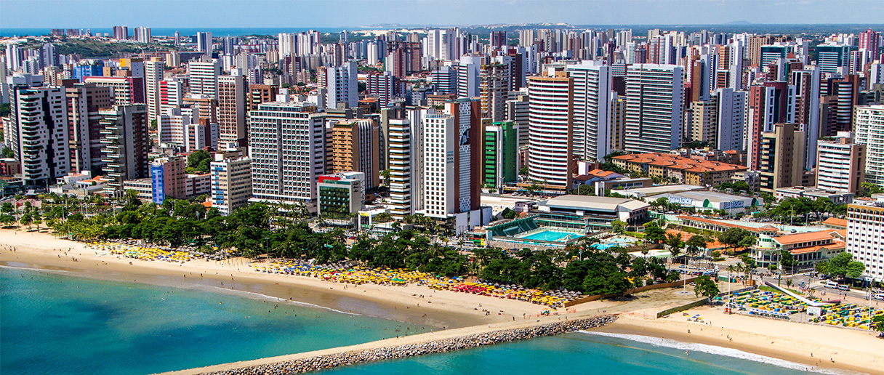

O Ceará é um estado localizado na Região Nordeste do Brasil, com capital em Fortaleza. Tem cerca de 9 milhões de habitantes e é conhecido por suas belas praias, clima semiárido no interior e forte tradição cultural. A economia cearense é baseada na indústria, comércio, turismo e agricultura, especialmente na produção de frutas. O estado se destaca pela cultura popular, incluindo o forró, o artesanato e festas tradicionais como o São João. O Ceará também é famoso pelo Cânion do Rio São Francisco e pelo Parque Nacional de Ubajara.
 Voltar